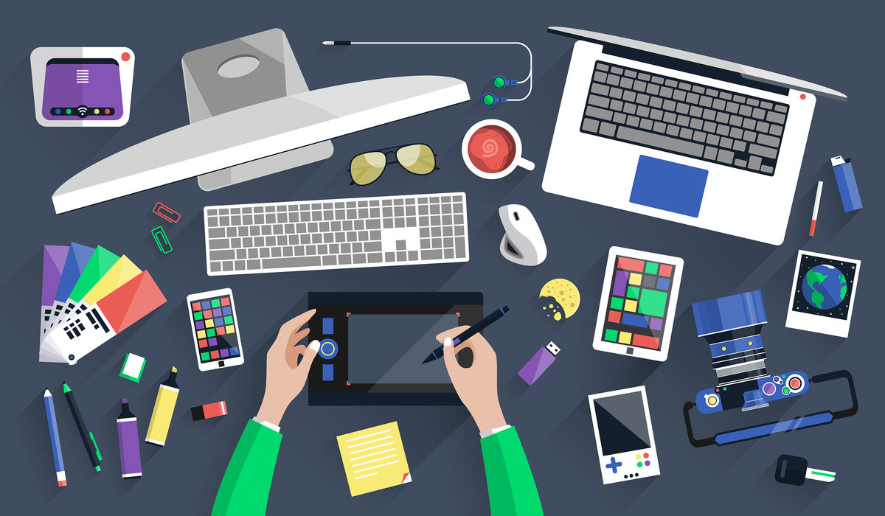
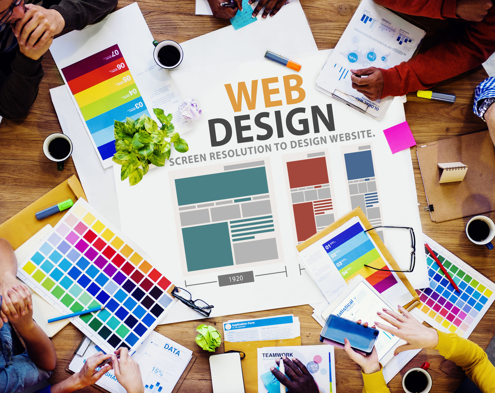

Кто такие веб дизайнеры?
 Веб-дизайнер — это тот, с кого начинается процесс создания сайта. Он не только делает красивое оформление, но и анализирует поведение пользователей.
Веб-дизайнер — это тот, с кого начинается процесс создания сайта. Он не только делает красивое оформление, но и анализирует поведение пользователей.
Дизайн — баланс красоты и логики
Многие считают, что веб-дизайнер рисует сайты как художник, добавляя украшения и картинки. Это не совсем верно: веб-дизайнер должен уметь сделать сайт красивым, но это только одна из его задач.
На самом деле веб-дизайнер — это в первую очередь проектировщик и аналитик, который создает простые и понятные сайты на основе анализа поведения пользователей. Дизайнер работает с данными, изучает пользователей и их интересы и только потом располагает блоки на сайте, продумывает цветовую схему, расставляя визуальные акценты.
Под словом «дизайн» сейчас подразумевается скорее не то, как сайт выглядит, а то, как он работает и насколько легко пользователям достичь своей цели. Творчество и искусство в оформлении отошли на второй план.
Чтобы этого добиться, дизайнер должен развиваться в смежных с веб-дизайном областях:
Чем занимается веб-дизайнер?
Веб-дизайнер рисует макеты лендингов, сайтов для компаний, интернет-магазинов, а также проектирует интерфейсы для интернет-сервисов. Чем он еще может заниматься: создавать шаблоны для email-рассылок, придумывать и рисовать интернет-баннеры.
Что из себя представляет рабочий процесс дизайнера?
Дизайнер получает данные от заказчика — зачем нужен сайт, как он будет работать, какие пользователи будут на него заходить. Хороший вариант, если заказчик точно знает, что нужно. Но так бывает не всегда, поэтому дизайнер должен сам задавать вопросы и получить нужные данные. Задачу, требования к сайту и ответы на вопросы дизайнер записывает в бриф.
Веб-дизайнер создает наброски или прототипы будущего сайта: на бумаге или в специальных программах. Прототипы больше похожи на схемы, где указывается расположение основных элементов на страницах сайта.
Создание сайта начинают с прототипов, чтобы посмотреть все варианты расположения элементов и согласовать с заказчиком.
В каком направлении развиваться веб-дизайнеру
По мере развития дизайнер или углубляется в одно из направлений веб-дизайна или учится работать над всем продуктом, применяя знания из разных сфер.
Вот на чем может специализироваться веб-дизайнер:
UX/UI-дизайн — проектирование внешнего вида сайтов и приложений с учетом удобства для разных пользователей.
UX, сокращение от английского выражения user experience, дословно означает «опыт пользователя». Здесь внимание уделяется пользователю и тому, какое впечатление он получает от работы с интерфейсом, как переходит по страницам, достигает ли он своей цели и насколько ему сложно это сделать.
Под UI — user interface — подразумевается внешний вид интерфейса, его характеристики и оформление. Здесь важно и расположение, и размер элементов, и цветовые акценты. Потому что в первую очередь нужно сделать дизайн удобным для пользователя.
Например, в мобильном приложении-навигаторе элементы управления делают крупными, чтобы водитель мог управлять картами и прокладывать маршрут по время движения.